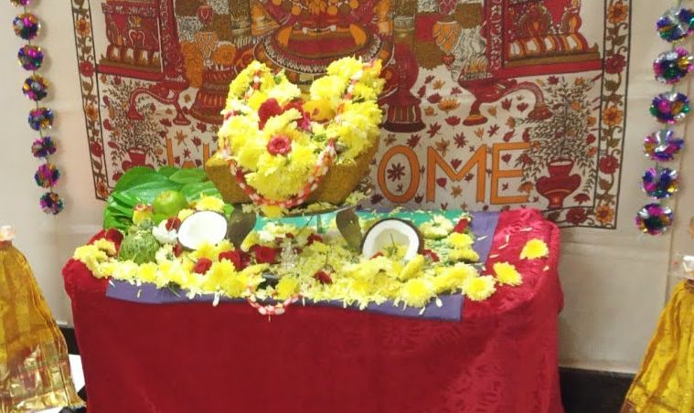
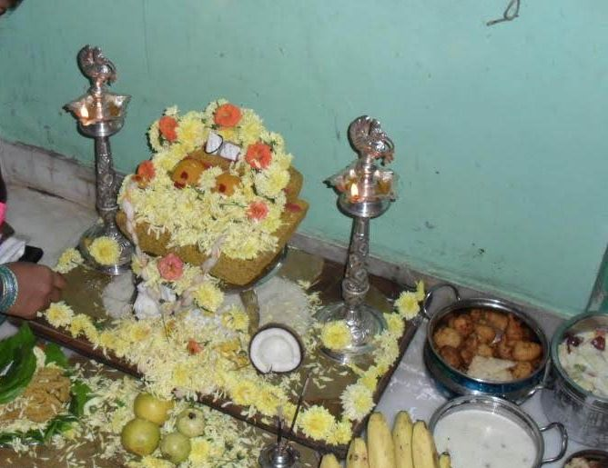
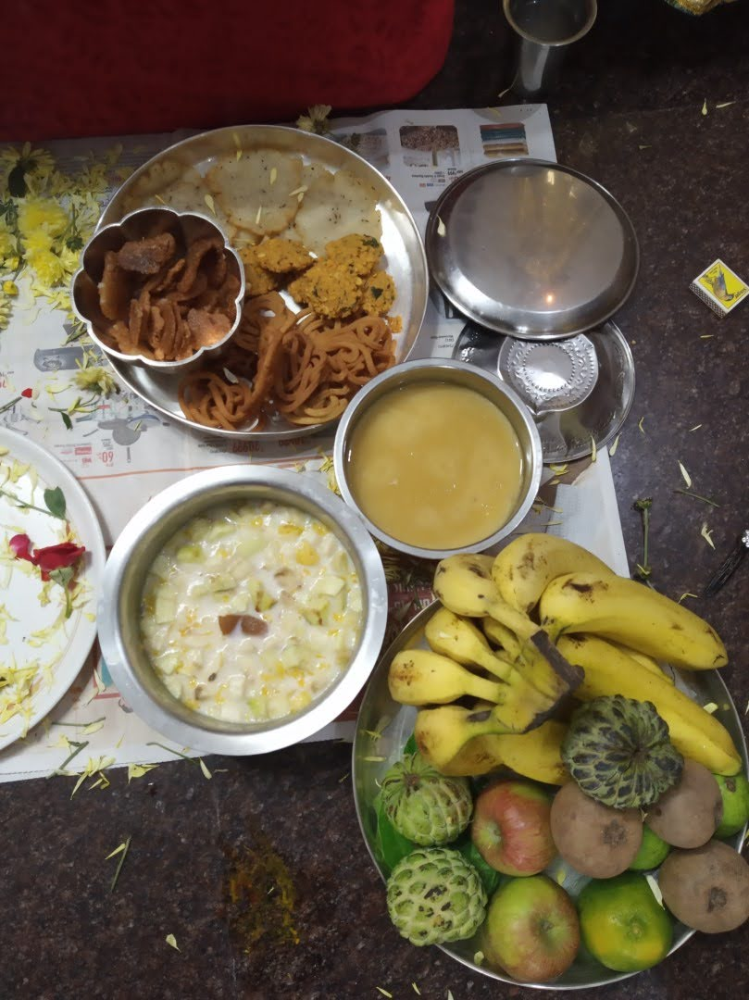

தீபாவளி கேதாரி விரத பூஜை
கேதாரம் என்பது இமயமலைசாரலைக் குறிப்பதாகும். அதாவது மலையைச் சார்ந்த வயல் பகுதியை கேதாரம் என்பர். இந்த இமயமலைக் கேதாரப்பகுதியில் சுயம்பு லிங்கமாக கேதாரேஸ்சுவரர் தோன்றினார். சக்திரூபமான பார்வதி தேவி சிவனை நினைந்து வழிபட்டு அதன் பலனாக அர்த்நாரியாகவும், அர்த்தநாரீசுவராகவும் ஒன்றுபட்ட தினமே கேதார கௌரி விரதமாகும்.
விரதத்தின் சாராம்சம்
21 நாள்கள் பூஜை செய்ததன் அடையாளமாக இடப்பட்ட 21 முடிச்சுகளுக்கும் பூஜை செய்து, பின் அந்தத் தோரணத்தைக் கையில் கட்டிக்கொள்ள வேண்டும்.
அன்றைய தினம் பிரதோச வேளைக்கு பின் நோன்புக் கயிறு கட்டப்படுகிறது. நோன்புக் கயிறு முழங்கைக்கும் தோளுக்கும் இடைப்பட்டப்பகுதியில் அணியப்படுகிறது.
விரத நாட்களில் பகலில் உணவு உண்ணாமல் இரவில் படையலிடப்பட்ட அதிரசம் மட்டும் உட்கொள்ளப்படுகிறது. இவ்வாறாக 21 நாட்கள் விரதம் பின்பற்றபடுகிறது. 21-ம் நாளான அமாவாசை அன்று முழுவதும் உணவு உண்ணாமல் வழிபாடு மேற்கொள்ளப்படுகிறது.
தற்போது இவ்விரதம் 9 அல்லது 7 அல்லது 5 அல்லது 3 நாட்கள் அல்லது அமாவாசை அன்று மட்டும் கடைப்பிடிக்கப்படுகிறது.
Preparation
தரையை துடைத்து - சிறிய கோலம் போட்டு - மனை போட்டு – இன்னொரு சிறிய கோலம் - வாழை இலை - 2 டம்ளர் அரிசி - 2 வெற்றிலை (முனை கிள்ளியது - எதிர்வாக்கில்) - அக்ஷிதை - 2 பூ –
அம்மிக்கல் மீது மஞ்சளால் ஆன உருண்டையாக கேதாரீஸ்வர்
1/2 kg சாமந்தி / ரோஜா பூஜைக்கு வைத்துக்கொள்ளவும்
முன் சிறிய பிள்ளையார் ஐ மஞ்சளில் செய்து வெற்றிலையில் வைக்கவும்
பெரிய விளக்கு – 2
பத்தி மாலை - 2 (ஒன்று கேதாரீஸ்வரருக்கு , இன்னொன்று சிறிய பிள்ளையாருக்கு)
நோன்புக் கயிறானது 21 இழைகளால் பின்னப்பட்டுள்ளதை வைக்க வேண்டும்.


நைவேத்தியம்
21 சர்க்கரை அதிரசம் (ஒரு ஜோடிக்கு), பஞ்சாமிர்தம், வடை, பெருகு பூரி , அரிசி முறுக்கு
5 fruits (4 fruits +1 coconut), 21 vethalai/beetle leaves
பஞ்ச பாத்திரம் - with water and spoon- apply turmeric, sandal, kumkum and akshadhai + 2 flowers

சிறிய பிள்ளையாருக்கு பூஜை செய்து முடிக்கவும் …
கேதாரீஸ்வரர் பூஜை தொடங்கவும்
தோரணத்திலிருக்கும் 21 முடிச்சுகளுக்கும் கீழ்க் கண்ட மந்திரங்களைச் சொல்லி பூஜை செய்ய வேண்டும்.
சிவாய நம: ப்ரதமக்ரந்திம் பூஜயாமி
வாஹாய நம: த்விதீயக்ரந்திம் பூஜயாமி
மஹாதேவாய நம: த்ருதீயக்ரந்திம் பூஜயாமி
வ்ருஷபத்வஜாய நம: சதுர்த்தக்ரந்திம் பூஜயாமி
கௌரீசாய நம: பஞ்சமக்ரந்திம் பூஜயாமி
ருத்ராய நம: ஷஷ்டக்ரந்திம் பூஜயாமி
பசுபதயே நம: ஸப்தமக்ரந்திம் பூஜயாமி
பீமாய நம: அஷ்டமக்ரந்திம் பூஜயாமி
த்ரியம்பகாய நம: நவமக்ரந்திம் பூஜயாமி
நீலலோஹிதாய நம: தசமக்ரந்திம் பூஜயாமி
ஹராயே நம: ஏகாதசக்ரந்திம் பூஜயாமி
ஸ்மர ஹராய நம: த்வாதசக்ரந்திம் பூஜயாமி
பவாய நம: த்ரயோதசக்ரந்திம் பூஜயாமி
சம்பவே நம: சதுர்தசக்ரந்திம் பூஜயாமி
சர்வாய நம: பஞ்சதசக்ரந்திம் பூஜயாமி
ஸதாசிவாய நம: ஷோடசக்ரந்திம் பூஜயாமி
ஈச்வராய நம: ஸப்ததசக்ரந்திம் பூஜயாமி
உக்ராய நம: அஷ்டாதசக்ரந்திம் பூஜயாமி
ஸ்ரீகண்ட்டாய நம: ஏகோநவிம்சக்ரந்திம் பூஜயாமி
நீலகண்ட்டாய நம: விம்சதிதமக்ரந்திம் பூஜயாமி
கேதாரேச்வராய நம: ஏகவிம்சதிதமக்ரந்திம் பூஜயாமி
கேதாரேச்வராய நம: நாநாநாவித பரிமள புஷ்பாணி ஸமர்ப்பயாமி
ஊதுபத்தி
"தசாங்கம் குக்குலோ பேதம் ஸூகத்திம்ச மனோஹரம். கபிலாக்ருத ஸம்யுக்தம் தூபோயம் ப்ரதி க்ருஹ்யதாம்
தூபம் ஸமர்பயாமி தூபாநன்தரம் ஆசமனீயம் ஸமர்பயாமி" புஷ்பைஹி பூஜயாமி .
நைவேத்தியம்
தேங்காய் உடைக்கவம்
வெற்றிலை முனை, பழங்கள் கிள்ளவும், தண்ணீர் தெளிக்க
ஓம் ப்ராணாய ஸ்வாஹா
ஓம் அபானாய ஸ்வாஹா
ஓம் வ்யாநாய ஸ்வாஹா
ஓம் உதானாய ஸ்வாஹா
ஓம் ஸமானாய ஸ்வாஹா
ஓம் ப்ரஹ்மணே ஸ்வாஹா
இறைவனுக்கு ஊட்டுவது போல்
கற்பூர ஹாரதி
ஓம் ராஜாதி ராஜாய ப்ரஸஹ்ய சாஹினே நமோ வயம் வைச்ரவணாய குர்மஹே
ஸமே காமான் காம காமாய மஹ்யம் கமேச்வரோ வைச்ரவணோ ததாது
குபேராய வைச்ரவணாய மஹாராஜாய நம:
கற்பூர நீராஞ்ஜனம் ஸமர்ப்பயாமி , ஆசமனியம் ஸமர்ப்பயாமி, புஷ்பைஹி பூஜயாமி .
கேதாரி விரத கதை
Everyone SIT – and tell STORY
ஒருமுறை, சிவபெருமானும் பார்வதிதேவியும் கயிலாயத்தில் இருந்தபோது, பிருங்கி முனிவர் தரிசனம் செய்ய வந்தார். அப்போது பிருங்கி, சிவபெருமானை மாத்திரம் வலம்வந்து நமஸ்கரித்தார். மகரிஷி, சக்தியாகிய தன்னைவிடுத்து சிவத்தை மட்டும் நமஸ்கரிப்பது ஏன்? என்று பார்வதி தேவி சிவபெருமானிடம் கேட்டாள். அன்னையின் கேள்வியின் பொருள் அறிந்த அப்பனும், இந்த உலகிற்கு ‘சிவன் இல்லையேல் சக்தி இல்லை’ எனவும் ‘சக்தியில்லையேல் சிவம் இல்லை’ என்பதை உணர்த்தவும் திருவுளம் கொண்டார். ஈசன் மனத்தில் நினைத்ததை உள்ளூர உணர்ந்த அன்னை, கயிலாயத்திலிருந்து நீங்கினாள். ‘கேதாரம்’ என்னும் மலைச் சாரலுக்குச் சென்று அங்கு தங்கி, ஈசனை லிங்க வடிவமாய்ப் பிரதிஷ்டை செய்து வழிபட ஆரம்பித்தாள் பார்வதிதேவி.
புரட்டாசி வளர்பிறை அஷ்டமி அன்று தன் பூஜையைத் தொடங்கி, தொடர்ந்து 21 நாள்கள் கடுமையான விரதம் மேற்கொண்டாள் கௌரி. அன்னையின் தவம் கண்டு மனம் கனிந்த ஈசன், உமையின் முன் தோன்றினார்.
"சர்வ ஜகன்மாதாவான நீ வேண்டுவது என்ன?" என்று கேட்டார். அப்போது அன்னை ஈசனை வணங்கி, "இந்த உலகில் ஆண்களும் பெண்களும் சமம் என்பதை உணர்த்த, உலகின் முதலோனான தாங்கள், தங்களில் பாதியை எனக்குத் தரவேண்டும்" என்று வேண்டிக்கொண்டாள். ஈசனும் அன்னையின் வேண்டுகோளுக்கிணங்கி, தன் இடப்பாகத்தை அம்மைக்கு வழங்கி அர்த்தநாரீஸ்வரராகக் காட்சிகொடுத்தார்.
மனம் மகிழ்ந்த அன்னை, 'தான் மேற்கொண்ட விரதமே தனக்கு இந்த வரத்தை வழங்கியது' என்பதை உணர்ந்து, 'இந்த விரதத்தை சுமங்கலிப் பெண்கள் கட்டாயம் மேற்கொள்ள வேண்டும்' என்றும் 'அவ்வாறு மேற்கொள்ளும் சுமங்கலிப் பெண்களுக்கு, தீர்க்க சுமங்கலி பாக்கியமும் கணவனை விட்டுப் பிரியாத ஆனந்த வாழ்வும் ஸித்திக்கும்’ என்றும் ஆசீர்வதித்தார். அன்று முதல் கேதார கௌரி விரதம் இந்தப் பூவுலகில் முதன்மையான விரதமாகப் போற்றப்பட்டு கடைபிடிக்கப்பட்டுவருகிறது. 'இந்த விரதத்தைத் தொடர்ந்து கடைபிடிப்பவர்கள், அனைத்து செல்வங்களையும் பெற்று வாழ்வார்கள்' என்றும், 'பிரிந்திருக்கும் தம்பதியர் இந்த விரதத்தை மேற்கொள்ள, விரைவில் சேர்ந்துவாழும் பாக்கியம் உண்டாகும்' என்றும் கூறுகிறார்கள்.
மற்றவை
பெண்கள் ஆர்த்தி எடுத்து பாட்டு பாடவும்
முற்றிற்று